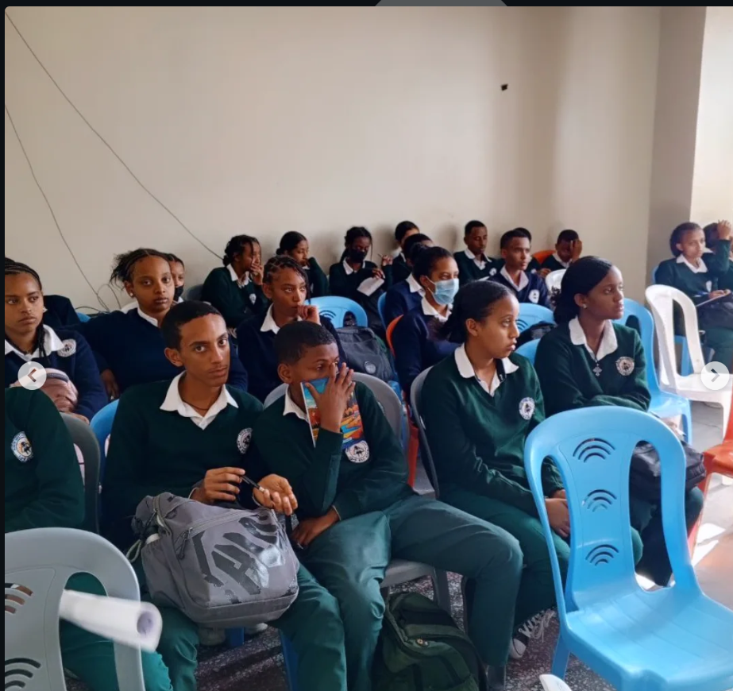
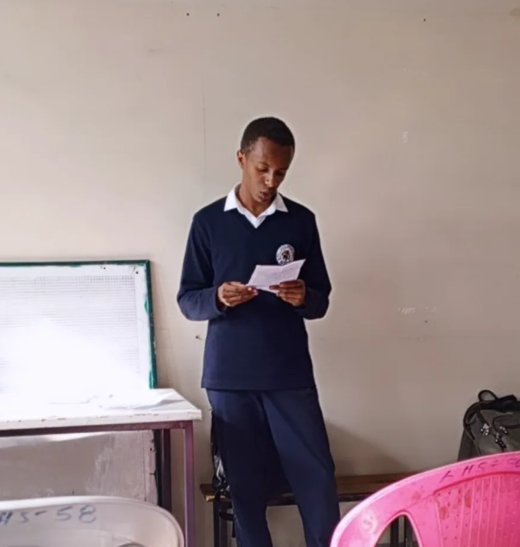

GIY offers a comprehensive Technology course that includes coding, AI, and digital innovation. Below are the course modules:
| Lesson | Description | Duration |
|---|---|---|
| Artifical Intelligence and Machine Learning | The goal of this lesson is to help students understand the basics of artificial intelligence and how machines think. Real life examples like chat bots, voice assistants, translation apps. Simple ideas of algorithms and data. Introduction to machine learning with the help of YouTube recommendations. AI in daily life. Smart homes, phones, and social media. Impacts of AI in our day to day life. | 4 Weeks |
| Automation | The goal of this lesson is to show how machines and robots make work more efficient and effective. What is automation? What is the difference between manual and automated work? Automation in factories. Robots assembling cars, drones, packages, phones, etc… and even themselves. Automation in transport. Self driving cars, drones and delivery systems. Impacts of automation on human lives. | 6 Weeks |
| Future Tech and Innovation | The goal of this lesson is to explore new technologies shaping our world and how to stay updated. Space Tech. Satellites, rockets, and how these innovations help us and our environment (GPS, Communication, Weather). Green Tech. Solar panels, wind energy, electricity. Bio Tech. New medicines, food science, lab grown meat. How to spot new trends concerning technological advancements? How do new ideas blossom? Tracking innovation through social media, news, or websites. | 5 Weeks |
| Hands on tech skills | The goal of this lesson is to set the right path for students who wish to enter the field of technology in any way. Getting started on web development and web design (HTML & CSS) The basics of app development, design, and prototyping. Coding logic. What is a code? What are the different types of programming languages? What are the purposes of these programming languages (Python, Java, C, C++, etc…). How to use a professional camera and its features. | |
| Class Work | Students will write a short essay on the topic they were most interested in. |
NB: The following lessons are given to students by students. These lessons have been reviewed by teachers in the field of technology.

